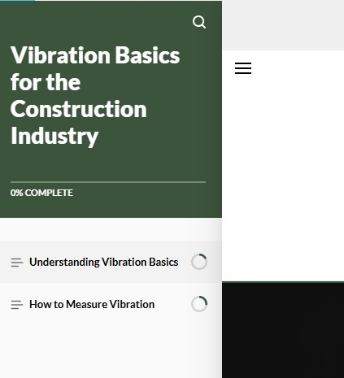
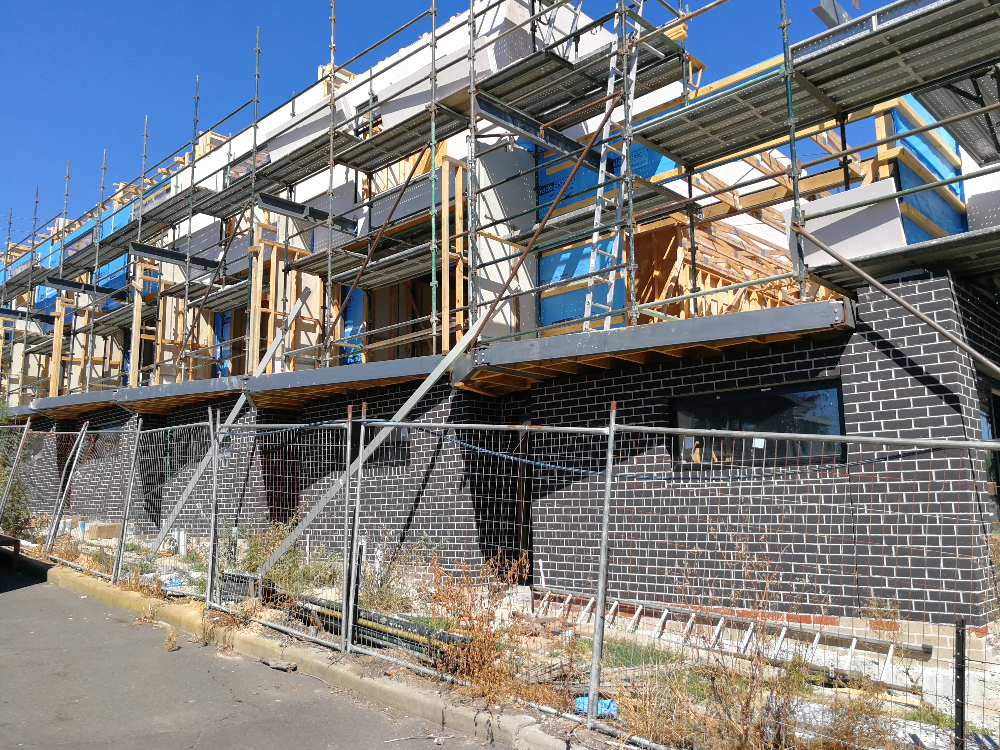
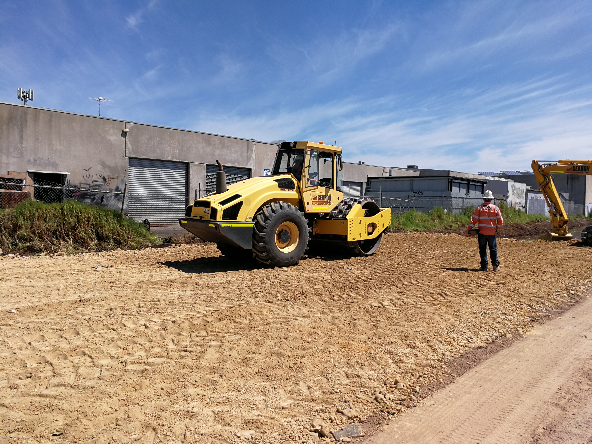

Your gateway to practical learning in construction noise and vibration. Explore our modules and enhance your expertise with industry-focused knowledge.
Get Started
SLRLearn is designed for environmental consultants, engineers, project managers, and anyone involved in construction projects who needs a solid understanding of noise and vibration fundamentals. Whether you're new to the field or looking to refresh your knowledge, our modules are tailored for practical application.

Learn the essentials of construction noise, including measurement techniques, regulations, and mitigation strategies. Ideal for those seeking a foundational understanding of noise impacts on construction sites.

Discover the basics of construction vibration, its sources, effects, and how to assess and manage vibration risks. Perfect for professionals involved in projects where vibration control is critical.
Stay tuned for new modules covering advanced topics in noise prediction, monitoring, and control, as well as in-depth vibration analysis and reporting. More learning opportunities are on the way!